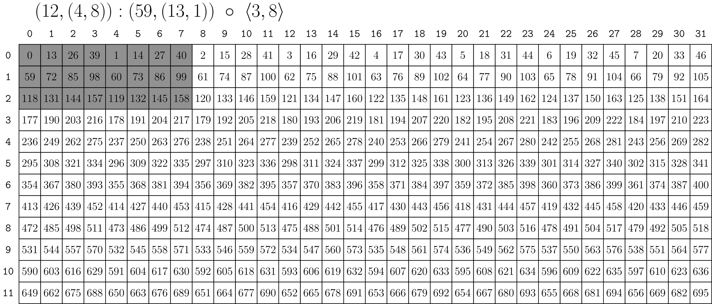
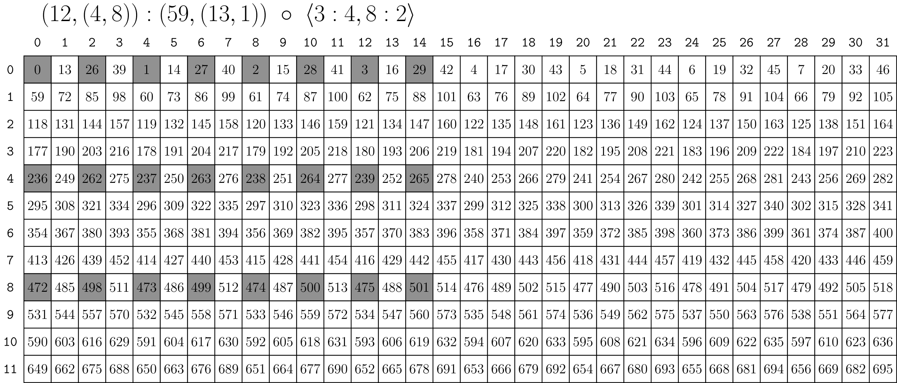
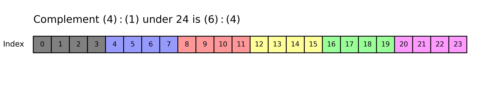
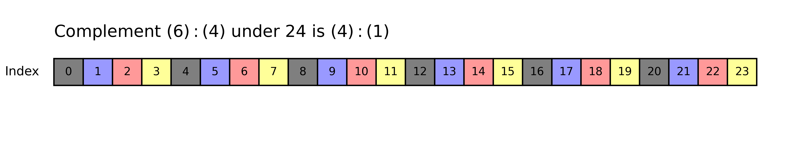

Layout Algebra
既然聊到了代数这个词，我们在介绍CuTe的代数运算之前，先简单讲一下CuTe代数的抽象代数本质。作者也仅仅对抽象代数略有了解，在此介绍有关概念仅为建立有关CuTe的直觉，和使用方法基本无关。
我们日常使用的初等代数是建立在加法阿贝尔群和除0的乘法阿贝尔群和交换律之上的，这个数学结构被称作实数域。但是CuTe所定义的数学结构并不满足群的定义（更不满足阿贝尔群的定义），CuTe更像是幺半群，只具有封闭性，结合律和单位元的特征。更直观的描述是，CuTe的运算不符合交换律和不具有可逆性。所以我们在进行操作layout的时候，需要严格按照逻辑顺序进行操作。
好了，题外话就说到这里。让我们进入正题。值得一提的是，本章讲到的api基本上是比较底层的运算规则，在编程中CuTe代数是对程序员透明的，编程中使用的是更高阶的，具有特定语义的api。单开一章是希望建立CuTe编程的直觉，同时这些内容也比较难，不理解大可不必深究。
Coalesce
在上一章的介绍里面，我们讲了Layout实际上是逻辑坐标到offset的映射。coalesce的作用是简化这个映射。我们来举一个例子。这个操作基本上是对程序员透明的，在编程中基本不会调用这个api，这个api的意义是简化坐标计算，这个简化发生在编译期模板计算时，属于CuTe的自动优化。
1auto layout = Layout<Shape <_2,_6>,
2 Stride<_1,_2>>{};
3auto result = coalesce(layout); // _12:_1
从一维的内存排布上看，(_2,_6):(_1,_2)对应的映射，和_12:_1这个1D张量对应的映射完全一样，后者更简单的描述了Layout的映射。所以coalesce简单来讲就是把复杂的高维张量，在维持原映射关系不变的前提下，展平到低维的向量上。注意，这里的展平和pytorch api：torch.flatten()完全不同，后者会改变这个张量的形状，但是CuTe coalesce是完全透明的，在我们看来Layout完全不会改变。当然，CuTe也不是无脑展开所有张量，CuTe内部有一套static assert的规则，只有步长连续的高维张量才会被展平。
Coalesce的好处有两个。首先是可以应用向量化（LDG.128）。在展平之前CuTe和编译器可能还会担心跨维度在内存内是否连续，在使用自动展平后，CuTe 就能一眼看出最内层维度的连续长度是多少，从而自动应用最高效的向量化指令。其次是尺寸为_1的维度在编译期会被自动忽略，这就为内存偏移计算提供了方便。
Composition
Composition是CuTe层次化结构(CTA->Warp->Thread)的基础。在 CuTe 中，Composition 的本质是用一个 Layout 的逻辑空间去重新解释（或者说约束）另一个 Layout 的逻辑空间。如果用数学公式来表达，它其实就是函数的复合（Function Composition）。文字描述可能有些晦涩难懂。我们在这里使用一个CuTe官方例子来说明Composition。
1R(c) := A(B(c))
2
3Example
4A = (6,2):(8,2)
5B = (4,3):(3,1)
6
7R( 0) = A(B( 0)) = A(B(0,0)) = A( 0) = A(0,0) = 0
8R( 1) = A(B( 1)) = A(B(1,0)) = A( 3) = A(3,0) = 24
9R( 2) = A(B( 2)) = A(B(2,0)) = A( 6) = A(0,1) = 2
10R( 3) = A(B( 3)) = A(B(3,0)) = A( 9) = A(3,1) = 26
11R( 4) = A(B( 4)) = A(B(0,1)) = A( 1) = A(1,0) = 8
12R( 5) = A(B( 5)) = A(B(1,1)) = A( 4) = A(4,0) = 32
13R( 6) = A(B( 6)) = A(B(2,1)) = A( 7) = A(1,1) = 10
14R( 7) = A(B( 7)) = A(B(3,1)) = A(10) = A(4,1) = 34
15R( 8) = A(B( 8)) = A(B(0,2)) = A( 2) = A(2,0) = 16
16R( 9) = A(B( 9)) = A(B(1,2)) = A( 5) = A(5,0) = 40
17R(10) = A(B(10)) = A(B(2,2)) = A( 8) = A(2,1) = 18
18R(11) = A(B(11)) = A(B(3,2)) = A(11) = A(5,1) = 42
复合后的R仍然是一个从逻辑坐标到内存offset的映射，因此它本身也可以被描述成一个Layout：R = ((2,2),3):((24,2),8)。这里R的逻辑坐标空间来自B，也就是说，原本可以传给B的坐标，现在都可以传给R，所以自然B和R是compatible的；区别在于R(c)会先用B(c)得到中间坐标，再用A把这个中间坐标映射到最终offset。这就是composition的数学解释。下面我们用一个更具体的例子说明composition的作用，并加深对composition的认识。
Ex.1 Mapping 2D matrix to a Thread Array
现在我们有8个线程组成的 Thread Array，希望用它来处理一个4*4的matrix。为了让例子简单，我们先假设每个线程处理2个元素，这样8个线程正好覆盖16个元素。
我们可以先定义矩阵本身的Layout。
1auto matrix = make_layout(make_shape(_4{}, _4{}),
2 make_stride(_4{}, _1{}));
然后定义一个线程侧的Layout。这个Layout的逻辑坐标是(tid, vid)，其中tid表示线程编号，vid表示该线程内部处理的第几个元素。我们希望线程0处理第0和第8个逻辑元素，线程1处理第1和第9个逻辑元素，以此类推。
1auto thr_val = make_layout(make_shape(_8{}, _2{}),
2 make_stride(_1{}, _8{}));
通过这样的定义，我们可以很方便的取出每个线程需要处理的元素。
1thr_val(tid, 0) = tid
2thr_val(tid, 1) = tid + 8
现在我们把矩阵Layout和线程Layout复合起来：
1auto thread_to_matrix = composition(matrix, thr_val);
这个thread_to_matrix就表示：输入一个线程坐标(tid, vid)，先通过thr_val得到这个线程负责的逻辑元素编号，再通过matrix把这个逻辑元素编号映射到矩阵的真实内存offset上。这就是layout的composition。
1thread_to_matrix(tid, vid) = matrix(thr_val(tid, vid))
我们把映射关系展开看一下：
1tid vid=0 vid=1
2 0 0 2
3 1 4 6
4 2 8 10
5 3 12 14
6 4 1 3
7 5 5 7
8 6 9 11
9 7 13 15
通过Layout的复合，我们可以很清晰的获得每个线程处理的元素的内存偏移。在这里composition的作用就是把“线程如何枚举逻辑元素”和“矩阵如何映射到内存”这两件事组合起来。我们不需要手写x = tid % 4、y = tid / 4之类的毫无可读性的下标变换，而是让两个Layout自然复合。如果矩阵在内存的储存方式变了，我们只需要修改Stride，而无需重新计算下标变换的常数。这就是CuTe的价值所在：可重构和可解释。
同样的，thread_to_matrix也是一个Layout ((_4,_2),_2):((_4,_1),_2)。本文在这里不仔细展开Layout Composition的运算逻辑，感兴趣的读者可以翻看NVIDIA CUTLASS guide自行学习。
这个例子通过一个简单的GPU kernel要处理的真实例子，说明了Composition在“线程布局 -> 数据布局 -> 内存offset”层次化映射的作用。
Ex.2 Pick up a Tile from a Matrix
Source from cutlass documentation
我们通过这个例子来说明Composition在tiling上的作用。
我们在编写一个GEMM时，会把整个大矩阵映射到很多Block上，每个Block处理大矩阵的一小部分，我们把这一小部分称为tile，这个过程叫做tiling。CuTe实现这个过程的底层逻辑就是Composition。在分块的过程中，我们希望在整个大矩阵中按照一定的形状和步长取出一块小矩阵。在上面的例子中，Composition()第二个参数也是一个Layout，这样复合出的Layout仍然是一个全局视野的Layout。CuTe提供了Composition的重载，第二个参数可以接受一个Tile。我们先介绍一下Tile，再介绍矩阵分块。
Tile
在CuTe中，Tile并不是一个独立的Class，而是一个cute::tuple<Layout0, Layout1, ...>，Tile只是多个Layout的容器，我们通过make_tile()来打包多个Layout来创建一个Tile。比如：
1auto tiler = make_tile(Layout<_3,_1>{}, // Apply 3:1 to mode-0
2 Layout<_8,_1>{}); // Apply 8:1 to mode-1
这个Tile的含义是，在mode-0上连续取3个元素，在mode-1上连续取8个元素。这就是我们需要的一个(_3,_8)的tile。
特别地，CuTe也会将一个Shape当作一个tiler，这个tiler的步长是1，比如：
1auto tiler = make_shape(Int<3>{}, Int<8>{}); // Equivalent to <3:1, 8:1>
Pick out 1 tile
我们把它作用在一个复杂的嵌套Layout上。
1// (12,(4,8)):(59,(13,1))
2auto a = make_layout(make_shape (12,make_shape ( 4,8)),
3 make_stride(59,make_stride(13,1)));
4
5// (_3,(2,4)):(236,(26,1))
6auto result = composition(a, tiler);
Result可以可视化为

1// <3:4, 8:2>
2auto tiler = make_tile(Layout<_3,_4>{}, // Apply 3:4 to mode-0
3 Layout<_8,_2>{}); // Apply 8:2 to mode-1
这个Tile的含义是，在mode-0上以4的步长取3个元素，在mode-1上以2的步长取8个元素。我们把它作用在相同的Layout上可以得到

但是，这样子分块明明可以分出来很多块，通过composition我们只能得到一块，我们该如何access其他的tile呢。这里的设计哲学是CuTe要保持数学上的纯洁性，composition不能改变B的形状，所以我们只能切出一块。如果我们需要access其他块，我们就需要CuTe给程序员使用的高级APIlocal_tile，我们可以通过再传入一个坐标来选择本block需要处理的那一块。有关这部分的使用将放在后面介绍，值得一提的是，local_tile使用的不是composition，而是后文要介绍的Logical Divide
Complement
在定义Logical Divide之前，我们还需要定义Complement，complement是数学上的补集，但是在CuTe的语境中并不是挖掉一块剩下的部分。CuTe Complement是这样的，以所选的tile为一个元素，找到一个描述这个元素的layout，使其可以占满给定的空间。这个Complement是一个更宏观的Layout。说来难以理解又空洞，我们通过几个具体数字的例子来说明。
complement(4:1, 24) 的结果是 6:4。4:1描述了一段连续的4个元素，而6:4描述的是这段4元素布局在整个24元素空间中重复6次。
complement(6:4, 24) 的结果是 4:1。这里6:4表示每隔4个位置取一个元素，中间留下的连续空隙就由4:1来补齐。
complement((2,2):(1,6), 24) 的结果是 (3,2):(2,12)。灰色的格子表示(2,2):(1,6),彩色的格子表示其重复。NVIDIA总结其为“这种重复的layout”。

Source from cutlass documentation
Logical Divide (Tiling)
有了composition和complement，我们终于可以定义logical divide了。Logical divide是CuTe逻辑分块中最重要的操作之一，基本所有的高阶tiling api，比如local_tile()、local_partition()、make_tiled_mma()，底层都离不开类似的逻辑。
Logical divide基于composition和complement。它在CuTe中的计算方式为：
1template <class LShape, class LStride,
2 class TShape, class TStride>
3auto logical_divide(Layout<LShape,LStride> const& layout,
4 Layout<TShape,TStride> const& tiler)
5{
6 return composition(layout, make_layout(tiler, complement(tiler, size(layout))));
7}
假设原始Layout是A，B是我们希望得到的tile形状，也称作tiler。B描述的是“一个tile内部有哪些元素”。如果只做composition(A, B)，我们只能得到第一个tile，也就是前面Composition章节中遇到的问题：明明整个矩阵可以切成很多块，但是composition只能取出其中一块。
Logical divide的做法是给B补上它的complement。记B* = complement(B, size(A))，那么：
1logical_divide(A, B) = composition(A, (B, B*))
这里的(B, B*)是一个更大的Layout。它的第一个mode由B描述，表示tile内部的元素；第二个mode由B*描述，表示这些tile在整个A中的重复位置。
Logical Divide的mode具有如下的语义。
1第一个mode: 一个tile里面有哪些元素
2第二个mode: 这个tile应该放在原始Layout的哪个位置
这就是logical divide和composition最关键的区别。composition只切出一块，而logical divide会把“块内坐标”和“块间坐标”都保留下来。
Ex.3 Logical Divide 1-D Layout
先看一个一维例子。假设原始Layout为：A (4,2,3):(2,1,8).它描述了一个size(A) = 24的一维逻辑空间，只是这个逻辑空间的内存顺序由A决定。我们现在希望可以把它分为 B 4:2这样的tile。也就是说，我们希望从A中取出形如0, 2, 4, 6这样的元素作为一个tile。
按照CuTe的实现，logical divide可以分成三步理解。
第一步，计算tiler在size(A) = 24下的complement：
1B* = complement(4:2, 24) = (2,3):(1,8)
第二步，把B和B*拼成一个新的Layout：
1(B, B*) = (4,(2,3)):(2,(1,8))
第三步，把原始Layout A和这个新的Layout做composition：
1logical_divide(A, B)
2 = composition((4,2,3):(2,1,8), (4,(2,3)):(2,(1,8)))
3 = ((2,2),(2,3)):((4,1),(2,8))

上图把A画成了一维Layout。灰色格子表示B = 4:2指向的一个tile，彩色格子表示这个tile在A中的不同重复位置。logical divide之后，结果Layout的第一个mode描述tile内部的数据，第二个mode负责遍历所有tile。
所以，一维logical divide可以理解为：
1原始Layout -> (tile内部坐标, tile编号)
这正是tiling需要的坐标结构。
Ex.4 Logical Divide 2-D Layout
上面的一维例子可以自然推广到多维Layout。对二维矩阵来说，我们通常希望同时在行方向和列方向分块，也就是对不同mode分别应用不同的tiler。
考虑下面这个二维Layout：A (9,(4,8)):(59,(13,1))
现在我们希望在mode-0方向使用3:3分块，即以3的步长取3个元素；在mode-1方向使用(2,4):(1,8)分块，即以1的步长取2个元素，再以8的步长取4个元素组。也就是说，tiler可以写成：B <3:3, (2,4):(1,8)>，注意，这里我们使用了尖括号来表示一个IntTuple<>,以与Layout区分。

上图中，灰色区域表示tiler B选中的一个tile，其他颜色表示同样形状的tile在整个Layout中的重复位置。logical divide之后，每个mode都可以看作一个1D Layout上的Logical Divide，每个mode被拆成两层，每层的意义和我们在1D Logical Divide上面讲的完全一致。
从这个角度看，logical divide可以理解成一种坐标重排：它不是改变数据本身，而是把原本的矩阵坐标重新组织成“tile内坐标 + tile间坐标”。这和我们写CUDA kernel时的直觉是一致的：先定位当前block负责哪一个tile，再定位当前线程负责tile内部哪些元素。
Aside: Zipped, Tiled, Flat Divides
这几种Divides本质是Logical Divide+特别的重排。三者都有具体应用的场景，值得庆幸的是这些都是底层数学运算，我们极少在编程中亲自操作这些Divide。所以这三种Divide作者打算作为特别篇配合具体的应用场景做讲解，同时也能减少读者在阅读晦涩难懂的本篇时的精神压力。
Product
最后，我们来讲解Product。Product可以想象为Logical Divide的反向过程（注：在抽象代数的语境下，这个操作并不是双边逆操作（Inverse），而是一种算子的伴随（Adjoint）操作）。我们希望通过Logical Divide把一个大的Layout通过Tiler分解为一个个小Tile。但是Product则是将这些小Tile按照特定的Layout排列为一个大Layout。
Logical divide基于composition和complement。它在CuTe中的计算方式为：
1template <class LShape, class LStride,
2 class TShape, class TStride>
3auto logical_product(Layout<LShape,LStride> const& layout,
4 Layout<TShape,TStride> const& tiler)
5{
6 return make_layout(layout, composition(complement(layout, size(layout)*cosize(tiler)), tiler));
7}
这个实现同样可以拆开理解。假设第一个参数是A，第二个参数是B。Product的结果有两层mode：
1第一层mode: 保留原始Layout A，也就是tile内部的布局
2第二层mode: 用B描述A应该如何重复排列
但是，B不能直接拿来当作重复布局。因为B描述的是“重复的顺序和形状”，而每一次重复都必须落在A之外新的空间中。于是我们需要先计算A在整个目标空间中的complement。记：
1A* = complement(A, size(A) * cosize(B))
那么Product可以理解为：
1logical_product(A, B) = (A, A* o B)
其中A描述tile内部元素，A* o B描述这些tile按照B的方式被复制到哪些位置。如果说logical divide是把一个大Layout拆成“tile内部坐标 + tile编号”，那么logical product就是反过来：给定一个tile布局和一个tile排列布局，把它们组合成一个更大的Layout。
Ex.5 Logical Product 1-D Layout
先看一个一维例子。假设我们有一个小Layout A (2,2):(4,1) 它描述了一个小Tile。现在我们希望按照Layout B 6:1 重复它。直观来说，这表示我们希望把A重复6次，得到一个包含24个元素的更大Layout。

上图把A和B都画成了一维Layout。A描述每个tile内部的布局，B描述这个tile重复的次数和顺序。Product之后，结果Layout的第一层mode是tile内部的数据，第二层mode负责遍历每一个tile。
注意，这个结果和前面一维Logical Divide例子得到的结果完全一样。这也说明了Product和Divide之间确实存在某种“反向”的直觉：Divide从大Layout中拆出tile结构，Product则用tile结构重新构造出大Layout。
当然，我们也可以通过修改B来改变tile重复的数量和顺序。

比如上图中，B = (4,2):(2,1)。这时A不再重复6次，而是重复8次，并且这些tile的排列顺序也发生了变化。换句话说，A决定“每块长什么样”，B决定“这些块怎么摆”。
Ex.6 Logical Product 2-D Layout
Product同样可以推广到多维Layout。我们可以使用前面介绍过的by-mode tiler思路，对二维Layout分别在不同mode上应用logical product。

上图展示了一个二维Product的例子。它的结果可以理解为：一个2x5的row-major小块，被按照一个3x4的column-major排列方式平铺出去。最终得到的是一个rank-2 Layout，只不过它的内部已经包含了“块内布局”和“块间布局”两层结构。
不过，这种直接手写tiler来做Product的方式并不是最推荐的使用方式。原因是这里的B非常不直观,为了构造它，程序员需要非常清楚A的shape和stride，否则很容易写错。我们真正希望得到的是用Layout B的方式排列Layout A。也就是说，A和B应该尽量保持独立，而不是让B依赖A的具体stride细节。CuTe更高层的API会在这个方向上继续封装，让程序员用更接近矩阵分块的逻辑的描述tiling和partition，而不是直接操作这些底层代数。
Aside:Blocked and Raked Products
和Logical Divide相同，为了使Product更加易用，CuTe在logical_product之上又封装了更符合矩阵乘法层次化描述习惯的，引入了更复杂重排方式的product api，这部分会留在特别篇和Divide一起讲解。
Take Away
本篇介绍了CuTe Linear Algebra。值得注意的是，虽然这些操作计算复杂，但是实际编程中很少用到此类raw api，更多的是CuTe已经封装好的API。即便如此，理解本章所讲的内容是理解后文Tensor Algorithms的基础，更是自定义更复杂算子的基础。当然，一时半会不能理解本文所讲也很正常，博主推荐的一个学习方式是通过自定义参数，并通过CuTe的print来观察layout的变化，以此来确认和巩固自己的理解。